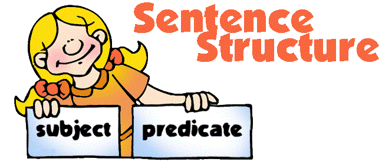

Rearrangement of sentences or paragraph is one of the most important, easiest and commonly seen question competitive exams like IBPS, UPSE, SSC, UGC CAT, etc.. Extensive practice is the key to solve these questions, if your common sense and you speed is good then these questions will be the score maker. There is no such strategies or logic to solve these type of questions just study them and
use them in the exercise that follow and you’ll be comfortable with them.
- When solving jumbled sentences or "Sequence of Words" type questions, first determine the "Subject" and the "Predicate".
SUBJECT - The part which names the person or thing we are speaking about.
PREDICATE - The part that tells something about the subject.
- A central Theme around which the passage is framed. Identify the central theme, which is usually the first sentence.
- A logical sequence is present which usually describes the central theme.
- If there are pronouns like (it, this, that etc) in the sentence , then it simply means that they have already discussed about the subject. So in maximum cases it won't be the first sentence (I and You are exceptions for this rule).
- Sentences that begin with 'And', 'But' etc usually follow the central theme with an explanation to the same or give additional information.
- Sentences that have full names mentioned are either the starting or come in the first few sentences of the paragraphs. Similarly, the sentences that have 'they', 'him' or 'her' or the short names would only come after the proper introduction of
the person.
- In maximum cases Last sentence ends with some conclusion / statement
- Its always a good idea to read the answer options to figure out the most correct sentence, than to try solving the jumbled sentence yourself.
Sentence Rearrangement Common Example
A. Miss Sullivan arrived at the Keller home when Helen was seven.
B. The deaf and blind Helen learned to communicate verbally.
C. But, eventually, Miss Sullivan's effort was rewarded.
D. Before Helen Keller was two years old, she
lost her sight and her hearing.
E. Miss Sullivan worked closely with Helen, her new student.
F. At times the teacher became frustrated.
1. DEFACB
2. DAEFCB
3. ACFDEB
4. CFDABE
5. FDACEB
Explanation:
- Upon reading the above paragraph, we come to see that in A, B, E, F, the names mentioned are short while in D, the full name is mentioned. Hence D is the first sentence.
- Next we see that Ms. Sullivan comes into the picture when Helen is seven years old and hence A is the second sentence.
- The paragraph revolves around Helen's learning and hence E states what joins Helen and Ms. Sullivan.
- Sentence F states that the teacher became frustrated at times which is followed by C (starts with 'But' which indicates that in spite of something Ms. Sullivan's efforts were rewarded).
- Sentence B follows stating how the teacher's efforts were rewarded and is the conclusion to a set of events.